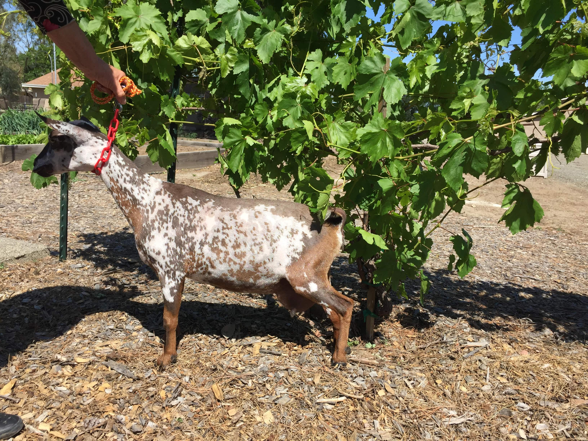
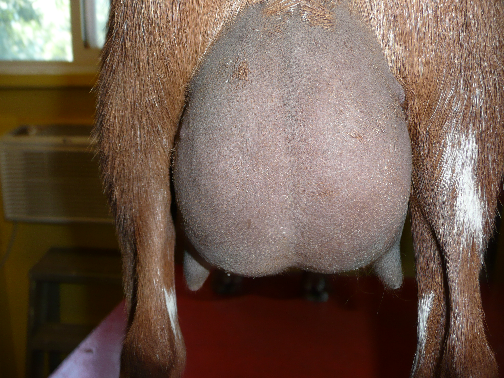
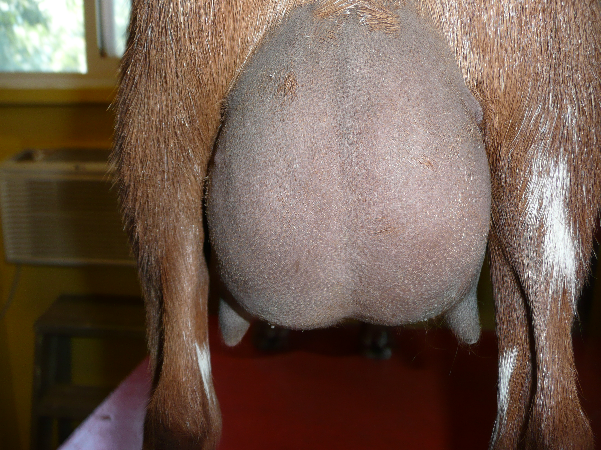
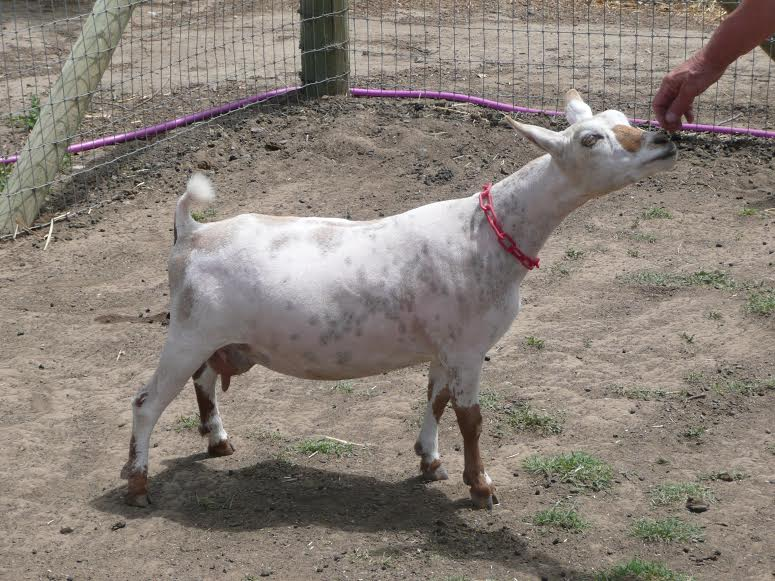
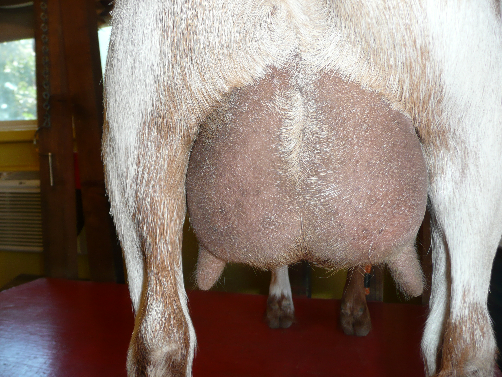

SENIOR DOES
| Doe | Photos |
|---|---|
|
DOB 05/16/2011 3*M Sire: CRF Castle Rock Harvest Moon +B AR2013 ST2016
Dam: 3G Family Farm BS Love Bunny 2*M
Sire's Sire: The Rosasharn TL Sitka Spruce ++B
Sire's Dam: AGS Castle Rock Once Ina Blue Moon VVEV86
Dam's Sire: AGS Little Dipper R Big Spender +B
Dam's Dam: AGS Sly Farms S Lovebug 1*M
|


|
|
DOB 02/19/2015
Sire: Castle Rock Chicago Peace Dam: Castle Rock Brinicle 2*M VEVV88
Sire's Sire: Copper Penny ROF Calico Jack
Sire's Dam: AGS CRF Castle Rock Tuscan Sun VEEE90
Dam's Sire: CRF Castle Rock Harvest Moon +*B
Dam's Dam: AGS CRF Castle Rock Blizzard 1*M VEEE91
|

 

|
|
DOB 03/02/2015
Sire: 3G Family Farm BR Bonenapper *B
Dam: 3G Family Farm P Lovebugs Oreo 2*M AR2014
Sire's Sire: SG Fairlea Barnaby Rudge +*B AR2012 LA2013
Sire's Dam: Copper Penny RR Dragon Lady VEEV90
Dam's Sire: Copper Penny HH Pollinator LA2011 VVV87
Dam's Dam: 3G AGS SLY Farms S Lovebug 1*M AR2010 LA2011, 2010, 2009 VEEV88
|


|
|
DOB 03/10/2015
Sire: Dream-Weaver Pogo's Flash Dam: Ags DJ's Kids BS Cinnamon Latte Sire's Sire: Dream-Weaver Pokengo Pogo Sire's Dam: Dream-Weaver BD ST Helen Dam's Sire: AGS Little Dipper R Big Spender +B AR2012 LA2010
Dam's Dam: AGS Kapa DE' LE' KK Carmel Latte
|


|
|
DOB 03/10/2015
Sire: Dream-Weaver Pogo's Flash Dam: Ags DJ's Kids BS Cinnamon Latte Sire's Sire: Dream-Weaver Pokengo Pogo Sire's Dam: Dream-Weaver BD ST Helen Dam's Sire: AGS Little Dipper R Big Spender +B AR2012 LA2010
Dam's Dam: AGS Kapa DE' LE' KK Carmel Latte
|

|
|
DOB 02/17/2015 Sire: Lost Valley ML Red Strokes Dam: Honey Goat China Aster Sire's Sire: AGS Lost Valley Malachi +B
Sire's Dam: AGS Lost Valley KW Cassiopeia 4*M VEEV89
Dam's Sire: AGS Honey Goat Mt. Carmel
Dam's Dam: Honey Goat Bee Joyful |
  |
|
DOB 03/24/2013
Sire: Camanna Music Mann Dam: CRF Castle Rock Lunar Eclipse VEEV91
Sire's Sire: Proctor Hill Farm To Go Daddy EEE92
Sire's Dam: Camanna CS Moonlight Sonata EEEE91
Dam's Sire: CRF Castle Rock Guy Noir +B
Dam's Dam: AGS Castle Rock Once Ina Blue Moon VVEV86
|

|
|
DOB 04/10/2015
Sire: Camanna Music Man Dam: Ags DJ's Kids KK Jayja Sire's Sire: Proctor Hill Farm To Go Daddy LA2014 EEEE92
Sire's Dam: CH Camanna CS Moonlight Sonata EEEE91
Dam's Sire: AGS Castle Rock Katonka
Dam's Dam: AGS Kapa DE' LE' Four Part Harmony |


|
CONTACT US
Barbara A Tucker
8 Gables
7280 Lauras Lane
Vacaville, CA 95688
925-250-6188
8gablesranch@gmail.com
8 Gables
7280 Lauras Lane
Vacaville, CA 95688
925-250-6188
8gablesranch@gmail.com